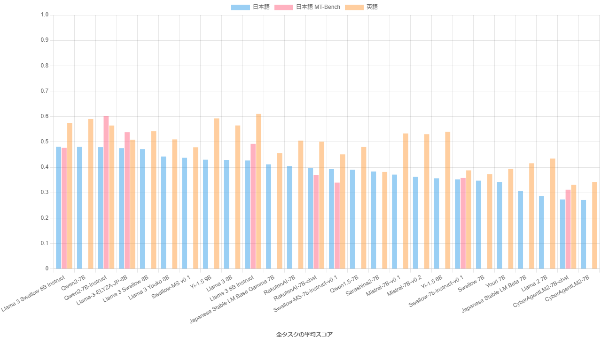
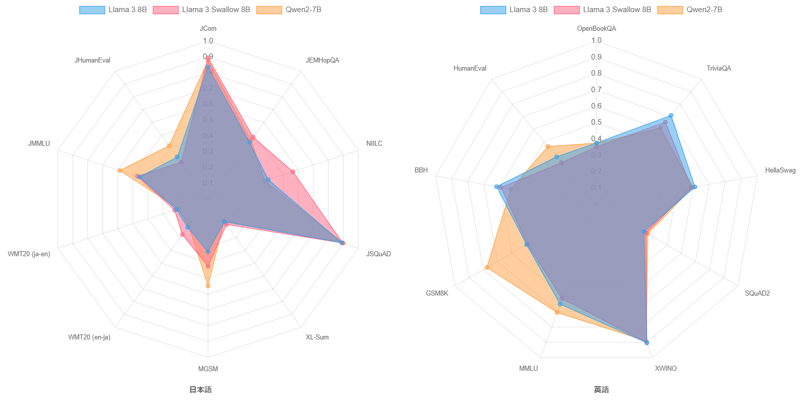
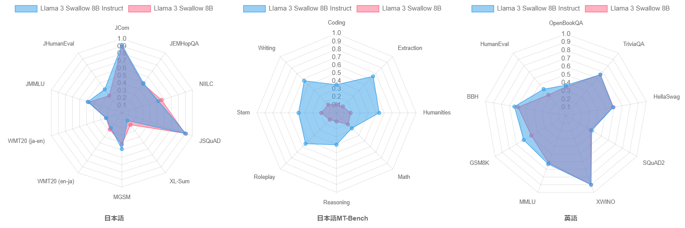
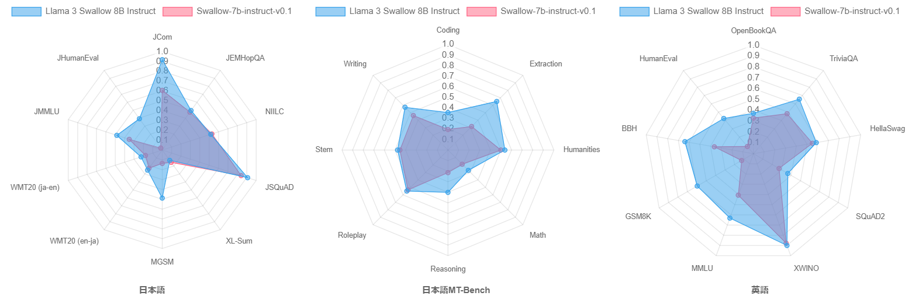
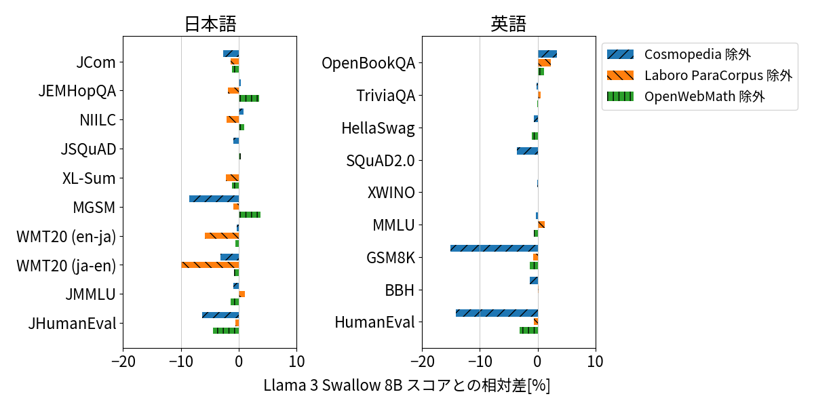

2024年7月1日
Llama 3 Swallow
Llama 3 SwallowシリーズはMeta Llama 3の日本語能力を強化した大規模言語モデル (8B, 70B) です。すべてのモデルのパラメータ（重み）がHuggingFace上で公開されていますので、Meta Llama 3 Licenseに従う限り、研究や商業目的などで利用できます。Built with Meta Llama 3.

旧型（より性能の高いモデルが開発・公開されています）
公開モデル
更新履歴
- 2024-07-01: Llama-3-Swallow-8B-v0.1, Llama-3-Swallow-8B-Instruct-v0.1, Llama-3-Swallow-70B-v0.1, Llama-3-Swallow-70B-Instruct-v0.1 を公開。
概要
Llama 3 Swallowは東京工業大学情報理工学院の岡崎研究室と横田研究室、国立研究開発法人産業技術総合研究所の研究チームで開発された大規模言語モデルです。オープンな大規模言語モデルの中で高い性能を示すMeta Llama 3 8Bと70Bに対して、研究チームはSwallowコーパスで継続事前学習を行い、日本語能力をさらに引き上げました。研究チームで実施した性能評価では、オープンな大規模言語モデルの中で、日本語や英語の言語理解・生成タスクにおいてトップクラスの性能を発揮しています（2024年7月現在）。今回公開したモデルは8Bと70Bの継続事前学習モデル（base）と、それぞれに指示チューニングを施した言語モデル（instruct）の計4種類で、Hugging Faceからモデルをダウンロードできます。
Llama 3 SwallowのライセンスはLlama 3のMeta Llama 3 Licenseを継承しています。このライセンスに従う限りにおいては、研究および商業目的での利用が可能です。
性能
パラメータ数が10B以下の主要な大規模言語モデルでベンチマーク実験を行い、日本語理解・生成タスクの平均スコアの高い順に並べたグラフを以下に示します（評価の詳細についてはこちらのページを参照してください）。Llama 3 Swallow 8B Instructの日本語理解・生成タスクの平均スコアはQwen2 7B (base) と同スコアで最も高く、以降スコアの差はあるものの、上位5番目までのLLMはほぼ同じ性能と言えます。Llama 3 Swallow 8B Instructの英語理解・生成タスクの平均スコアは、Llama 3 8B Instructよりも3.7ポイント低下していますが、それでも4番目の位置を保っています。日本語マルチターン対話タスク（日本語MT-Bench）では、Qwen2 7B Instructが他を圧倒していますが、このタスクでもLlama 3 Swallow 8B Instructは4番目の位置を保っています。

続いて、継続事前学習の効果を検証します。下の図は、継続事前学習前後のモデルであるLlama 3 8BとLlama 3 Swallow 8B、さらにベースモデルの中で高い性能を示すQwen2 7Bの言語理解・生成タスクのスコアをレーダーチャートで示しています。Llama 3 8BとLlama 3 Swallow 8Bを比較すると、継続事前学習により知識に関するタスクの性能向上、特に日本語の質問応答タスク（NIILC）で顕著な正解率上昇が見られます。また、数学（MGSM）や機械翻訳（WMT20）の性能も若干向上しています。このような傾向は、Llama 2やMistralの継続事前学習でも観察されており、Swallowシリーズの継続事前学習の特徴を継承しています。英語の言語理解・生成タスクでは、継続事前学習による性能低下が観測されているものの、その低下度合いは低いことが分かります。さて、Qwen2 7BとLlama 3 Swallow 8Bを比較すると、Qwen2 7Bはコード生成（JHumanEval, HumanEval）、試験問題（JMMLU, MMLU）、数学（MGSM, GSM8K）で他を圧倒する性能を示すものの、それ以外の日本語のタスクでは、継続事前学習前のLlama 3 8Bと同程度の性能であることが分かります。コード生成、試験問題、数学の性能に差が生じる要因や、継続事前学習でこれらのタスクの性能を高める方法やその意義について、今後検討していきたいと考えています。

さらに、指示チューニングの効果を検証します。下の図は、指示チューニング前後のモデルであるLlama 3 Swallow 8BとLlama 3 Swallow 8B Instructの言語理解・生成タスクおよび日本語マルチターン対話タスク（日本語MT-Bench）のスコアをレーダーチャートで示しています。日本語の言語理解・生成タスクでは、タスクによって性能の向上・低下がみられますが、コード生成タスク（JHumanEval）の伸びが大きいため、ベースモデルよりも指示チューニングモデルの方が平均スコアで0.9ポイント上回りました。英語の言語理解・生成タスクでは、スコアが向上するタスクの方が多く、平均スコアは3.2ポイント向上しました。なお、（継続）事前学習のみで構築されたベースモデルは、指示追従能力や対話能力をあまり獲得していないと考えられるため、日本語マルチターン対話タスク（日本語MT-Bench）での評価を省略していますが、ここでは特別にベースモデルであるLlama 3 Swallow 8Bの日本語MT-Benchでの性能を測定してみました。下の中央のレーダーチャートの結果から、やはりベースモデルはMT-Benchタスクを全く解けないこと、指示チューニングにより日本語MT-Benchの各タスクが解けるようになったことが伺えます。これらのことから、指示チューニングの効果が伺えます。

最後に、Swallow-7b-instruct-v0.1（初代Swallowの指示チューニング改良版）とLlama 3 Swallow 8B Instructを比較してみましょう。モデルのパラメータ数が1B増えていますので単純な比較はできませんが、下のレーダーチャートが示すように、Llama 3 Swallow 8B Instructがほぼ全てのタスクで優れています。後で説明するように、継続事前学習コーパスの改良は性能向上の要因の一つだと思いますが、Llama 2からLlama 3での性能向上によるところが大きいと思います。

Swallowプロジェクトでは、高性能なLLMの開発の参考とするため、LLMの開発と並行して、公開されているLLMの評価実験を独自に進めています。このウェブサイトで紹介した評価結果も含めて、全ての評価実験の結果および実験設定については、日本語LLM評価を参照してください。公開されているLLMそれぞれに個性がありますので、LLMを選択するための情報として、また日本語に強いLLMの開発のための参考としてお役に立てると幸いです。
構築方法
Llama 3 Swallowは以下の手順で構築されています。
- Llama 3 Swallowのbaseモデル: Llama 3のbaseモデルに対して継続事前学習を行い、日本語の知識をモデルに追加する
- Llama 3 Swallowのinstructモデル: Llama 3 Swallowのbaseモデルに指示チューニングを行い、指示に従う能力や対話能力を鍛える
初代SwallowやSwallow-MSと比べると、以下の特徴があります。
Llama 3の語彙をそのまま採用
初代Swallow（Llama 2ベース）やSwallow-MS（Mistralベース）とは異なり、Llama 3 Swallowシリーズでは語彙拡張（日本語の文字やサブワードを語彙に追加すること）を行っていません。語彙拡張はLLMの生成速度が速くなる、日本語の取り扱いが自然になる等の利点がありますが、タスクの性能が低下しやすい、モデルマージをやりにくいなどの欠点もあります。そこで、Llama 3 Swallowの開発を始める前に、語彙拡張を行うべきか検討を行いました。
以下に、Llama 2やMistral、およびその語彙拡張モデルの語彙数やひらがな、カタカナ、CJK統合漢字の（単一文字）トークン数を示します。この表で示されている通り、Llama 3の語彙数はLlama 2やMistralよりも多く、日本語の文字もより多く含んでいます。試しに、Llama 3の語彙に日本語のコーパスから求めた48,000件のサブワードを追加してみると、同じ文字数のテキストの系列長が20%短くなる（推論が1.25倍早くなる）ことが分かりました。したがって、Llama 3の語彙を拡張する効果はあるのですが、その効果はLlama 2の42%削減（1.72倍の高速化）、Mistralの38%削減（1.62倍の高速化）と比べると限定的ですので、語彙拡張を行わないことにしました。
| モデル | 語彙数 | ひらがな (文字) | カタカナ (文字) | CJK統合漢字 (文字) |
|---|---|---|---|---|
| Llama 2 | 32,000 | 61 | 76 | 700 |
| Swallow (語彙拡張あり) | 43,176 | 83 | 87 | 2,832 |
| Mistral | 32,000 | 58 | 76 | 1,456 |
| Swallow-MS (語彙拡張あり) | 42,880 | 83 | 87 | 3,208 |
| Llama 3 | 118,256 | 75 | 83 | 2,314 |
| 文字数 | 96 | 96 | 20,911 |
継続事前学習データセットの改善
初代SwallowやSwallow-MSでは、日本語の知識を問うタスクでは高い性能を示すものの、算術推論やコード生成の能力が低いという欠点がありました。そこでLlama 3 Swallowの開発では、これらの不足している能力を強化して汎用的に利用できるLLMをめざして、継続事前学習データセットの改善を行いました。具体的には、ウェブテキストであるSwallowコーパスおよびRefinedWeb (Penedo et al., 2023) を主体としながら、日本語および英語のWikipedia、教科書的テキストのCosmopedia、ウェブから収集した対訳文のLaboro ParaCorpus、数学テキストのOpenWebMath (Paster et al., 2024)、数学系ソースコードのAlgebraicStack (Azerbayev et al., 2024) を追加しました。なおRefinedWebとの重複を避けるため、Cosmopediaのサブセットweb_samples_v{1,2}を除外しています。
こうした改善の効果を定量化するため、Cosmopedia、Laboro ParaCorpus、OpenWebMath それぞれを除いて学習したモデルとLlama 3 Swallow 8Bモデルのスコアの相対差（いわゆるアブレーション分析）を計測しました。特定のテキストを抜いてスコアが低下するならば、タスクへの寄与が考えられるためです。結果を以下に示します。 まず、Cosmopediaは日英の算術推論（MGSM, GSM8K）およびコード生成（JHumanEval, HumanEval）に寄与することがわかります。Cosmopediaは講義概要・数学テキスト・ソースコードなどを執筆素材として、Mixtral-8x7B-Instructを用いて合成された「教科書風」のテキストです。教科書風テキストの有効性は複数の報告があり (Abdin et al., 2024; Penedo et al., 2024)、我々の分析結果はこれらの知見と整合しています。 つぎに、Laboro ParaCorpusは機械翻訳（WMT20）に寄与しており、初代Swallowで報告した対訳文の有効性 (Fujii et al., 2024) を再現できました。最後に、OpenWebMathはCosmopediaの執筆素材に含まれているためか、コード生成へのわずかな寄与にとどまりました。

指示チューニングデータセットの改善
初代Swallowの指示チューニングにはOpenAssistant1を含む英語インストラクションデータの機械翻訳版を使用しましたが，のちに調査したところ，マルチターン対話が失われている，および翻訳誤りやぎこちない日本語が含まれるという問題を認識しました。しかし人手によるデータセットの作成や修正は高コストであることから、我々は既存のLLMにデータセットを合成させる、模倣学習 (Gudibande et al., 2023) と呼ばれるアプローチを採用しました。 模倣学習は元のLLMが備える知識や能力を転移するものではありませんが、指示に従う能力や回答のスタイルを転移することで、人間の好む応答をしやすくなることが知られています。 具体的には、OpenAssistant1 (Köpf et al., 2023) を機械翻訳したllm-jp/oasst1-21k-jaの指示文をMixtral-8x7B-Instruct-v0.1に入力して応答文を出力させました。Mixtralを選択した理由は、英語のMT-Benchで高得点を挙げており、なおかつ用途に寛容なApache 2.0ライセンスで提供されているためです。実際に応答文を人手で確認したところ、指示応答性が良好であり、出力される日本語の文章も流暢でした。 一方で英語で応答する傾向が強いことから、プロンプトや文生成のパラメータを調節して、日本語で応答する割合を30%から50%に改善しました。また生成したデータセットの目視チェックを行い、不適切な応答文をヒューリスティクなフィルタで取り除きました。 さらに、日本語LLMでも英語インストラクションの併用が有効であるという先行事例を踏まえて、OpenAssistant2の対話ツリーから最高評価の対話のみを抽出したデータを併用することにしました。 これらのデータセットを使用して構築したSwallow-instruct-v0.1では、7B、13B、70Bすべてのモデルサイズにおいて、日本語MT-Benchのスコアが大幅に改善され、模倣学習データによる指示応答性と日本語の流暢さの向上が確認できました。また、Llama 3 Swallowのinstructモデルの構築にも使用しました。

チャット・ベクトルを併用した指示チューニング
Llama 3の継続事前学習を行う際、baseモデルとinstructモデルのどちらを出発点にするのか、選択の余地があります。Swallowプロジェクトでは、研究などで性能の高いbaseモデルを利用する状況があること、指示チューニングのノウハウを蓄積したいという理由から、baseモデルからの継続事前学習を行っています。ただ、元々のLlama 3の指示チューニングでは教師ありファインチューニングだけでなく、棄却サンプリング、近傍方策最適化（PPO）、直接選好最適化（DPO）が施されており、Llama 3のinstructモデルの高い指示追従能力や安全性対策を活用できないのは、勿体ない感じがします。
そこで、チャットベクトル (Huang et al., 2024) と教師ありファインチューニング（SFT）を併用した指示チューニングを行いました。チャットベクトルとは、指示チューニング前後のモデルのパラメータベクトルの差分を求めることで、指示チューニングに相当するパラメータの変化を取り出そうとするアイディアです。このアイディアに基づくと、Llama 3 instructのパラメータベクトルからLlama 3 baseのパラメータベクトルを引くことで、Llama 3の指示チューニングに対応するチャットベクトルを求めることができます。継続事前学習でLlama 3 baseの日本語能力を強化し、Llama 3 Swallowのベースモデルを構築した後、チャットベクトルを足すことで、元々のLlama 3の指示チューニングを模擬したモデルを作ることができます。その後、先ほど説明した指示チューニングデータで教師ありファインチューニングを施し、Llama 3 Swallow instructモデルを構築しました。

その他の情報
参考文献
- Marah Abdin, et al. 2024. Phi-3 technical report: A highly capable language model locally on your phone. arXiv:2404.14219.
- Zhangir Azerbayev, Hailey Schoelkopf, Keiran Paster, Marco Dos Santos, Stephen Marcus McAleer, Albert Q. Jiang, Jia Deng, Stella Biderman, Sean Welleck. 2024. Llemma: An Open Language Model for Mathematics. ICLR.
- Kazuki Fujii, Taishi Nakamura, Mengsay Loem, Hiroki Iida, Masanari Ohi, Kakeru Hattori, Hirai Shota, Sakae Mizuki, Rio Yokota, Naoaki Okazaki. 2024. Continual Pre-Training for Cross-Lingual LLM Adaptation: Enhancing Japanese Language Capabilities. arXiv:2404:177790.
- Shih-Cheng Huang, Pin-Zu Li, Yu-Chi Hsu, Kuang-Ming Chen, Yu Tung Lin, Shih-Kai Hsiao, Richard Tzong-Han Tsai, Hung-yi Lee. 2024. Chat Vector: A Simple Approach to Equip LLMs With New Language Chat Capabilities. ACL.
- Keiran Paster, Marco Dos Santos, Zhangir Azerbayev, Jimmy Ba. 2024. OpenWebMath: An Open Dataset of High-Quality Mathematical Web Text. ICLR.
- Guilherme Penedo, Quentin Malartic, Daniel Hesslow, Ruxandra Cojocaru, Hamza Alobeidli, Alessandro Cappelli, Baptiste Pannier, Ebtesam Almazrouei, Julien Launay. 2024. The RefinedWeb dataset for Falcon LLM: Outperforming curated corpora with web data only. NeurIPS.
- Guilherme Penedo, Hynek Kydlíček, Loubna Ben allal, Anton Lozhkov, Margaret Mitchell, Colin Raffel, Leandro Von Werra, Thomas Wolf. 2024. The FineWeb Datasets: Decanting the Web for the Finest Text Data at Scale. arXiv:2406.17557.
- Andreas Köpf, et al. 2024. OpenAssistant Conversations - Democratizing Large Language Model Alignment. NeurIPS.
- Arnav Gudibande, Eric Wallace, Charlie Snell, Xinyang Geng, Hao Liu, Pieter Abbeel, Sergey Levine, Dawn Song. 2023. The False Promise of Imitating Proprietary LLMs. arXiv:2305.15717.
付記
大規模言語モデルSwallowの研究開発は、産総研が構築・運用するAI橋渡しクラウド（ABCI: AI Bridging Cloud Infrastructure）の「大規模言語モデル構築支援プログラム」、国立研究開発法人新エネルギー・産業技術総合開発機構（NEDO）の「次世代人工知能・ロボットの中核となるインテグレート技術開発」プロジェクト (JPNP18002) の「熟練者観点に基づき、設計リスク評価業務における判断支援を行う人工知能適用技術の開発」、その他の支援によって実施されました。また、学習した大規模言語モデルの評価実験では、LLM-jp （LLM勉強会）で開発されているデータや知見を活用しました。